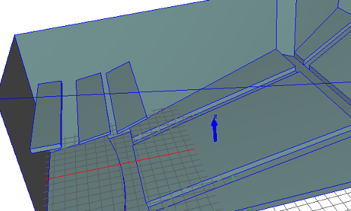
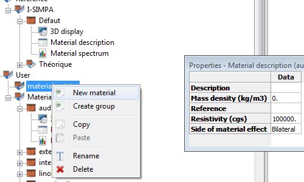
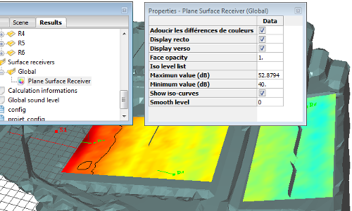
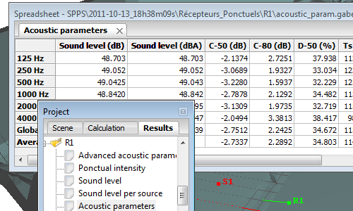

I-Simpa overview¶
I-Simpa alone is not a calculation software, but is equivalent to a pre and post-processor for acoustic codes. One or more numerical codes must be added in order to obtain a fully functional system.
At the present time, I-Simpa is distributed with two codes:
- TCR code based on the classical theory of reverberation
- SPPS code based on particle tracing approach
The resume of all code characteristics are given here
Classical applications are room and building acoustics, environmental noise and industrial noise, but it can be easily extend to other applications concerning the sound propagation in 3D environments (interior of vehicle, sound in cavities…).
I-Simpa has been initially developed as a research tool (i.e. for research laboratories), but can also be a very efficient tool for a professional/commercial use, as well as for education.
- Functionnal
- Elements and components are organized in tree structures, to easily access to all information, parameters and properties. Many features are proposed for helping users
- Open system
- All information and data are organized in spreadsheets that can be displayed, exported, copied… User can use their own software for processing data and graphical representation.
- Open software
- User can integrate their own numerical propagation code, develop their own functionalities within the interface, using Python scripts… All have been done in order you can extend I-Simpa easily.
- Open source project
- The source code of I-Simpa is freely available on the GitHub plateform (https://github.com/Ifsttar/I-Simpa). There are many way for the community to contribute to the development of I-Simpa.
I-Simpa features¶
Geometry¶
{kind=link}
- Import 3D files
- Import 3D files with common extensions: 3DS (3D Studio), STL (stereolithography), PLY (Stanford) and POLY (TetGen).

- Geometry correction
- Automatic tools for model corrections and repairs during file importation. Model detection error.

- Geometry approximation
- Algorithm for model approximation by the marching cube method. This can be useful for original 3D scene with many problems.

- Parallelepipedic geometry
- Built-in design of parallelepipedic model. Just gives the dimensions of the scene.
Surface material¶

- Import data material
- Import data from file (import from CATT-Acoustic™ and Odeon room acoustics software).

{kind=link}
- Reference and User material database
- Use the built-in database (Reference) or create your own materials (User database). Organize and copy material between (sub-)groups of material.

- Material properties
- Define acoustic parameters by frequency band: absorption, transmission loss, scattering, scattering reflection law. Add material information (description, physical parameters…).
Sound sources¶

- Reference and User spectrum database
- Use the built-in database (Reference) or create your own source spectrum (User database).

- Sources properties
- Define source properties: spectrum, position, directivity, delay, activate/desactivate sources.

- Sources manipulation
- Organize and copy sources between (sub-)groups of material. Translation and rotation of (sub-)groups of sound sources.
Acoustic receivers¶

- Punctual sound sources
- Defines source properties: position, directivity, orientation to a point or (with a dynamic link) to a source, background noise.

- Receivers manipulation
- Organize and copy receivers between (sub-)groups of material. Translation and rotation of (sub-)groups of receivers.

- Surface receivers
- Definition of a surface receiver by selecting surfaces of the 3D model or by creating cut planes.
Acoustic calculation¶

- Calculation code
- Built-in acoustic calculation code: sound particle tracing (SPPS); Classical theory of reverberation for room acoustics (TCR).

{kind=link}
- Sound map
- Noisemap (surface receivers) in stationary stationary state, time-varying state, time-cumulated state. Iso-contours.

{kind=link}
- Acoustics parameters
- EN ISO 3382-1 room acoustics parameters: Reverberation times, Clarity, Definition, Early support, Centre time, Strength, Early Lateral Energy Fraction, Late Lateral Sound Level.

- Animation
- Intensity vectors animation for punctual receivers. Ray-tracing and particle-tracing animation.
Other features¶

- Python™ scripting
- Extension of I-Simpa functionalities using Python scripts. Creations of Toolbox.

- Environmental data
- Definition of atmospheric conditions and calculation of absorption coefficient (ISO 9613-1). Meteorological parameters (log-lin sound speed velocity profiles).

- Tetrahedric meshing
- Built-in Delaunay tetrahedric meshing using TetGen code (fully parametrized).

- Fitting zone
- Definition of volumes with fitting objects characterized by probabilistic parameters (mean free path, absorption, diffusion law).